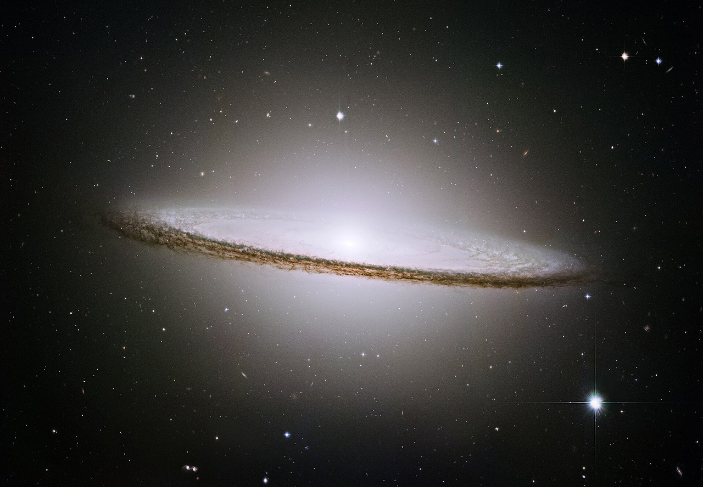

The Andromeda Galaxy is a barred spiral galaxy and is the nearest major galaxy to the Milky Way. It was originally named the Andromeda Nebula and is cataloged as Messier 31, M31, and NGC 224.g
Andromeda
Magellanic Clouds
The Magellanic Clouds (Magellanic system[2][3] or Nubeculae Magellani[4]) are two irregular dwarf galaxies in the southern celestial hemisphere. Orbiting the Milky Way galaxy, these satellite galaxies are members of the Local Group. Because both show signs of a bar structure, they are often reclassified as Magellanic spiral galaxies.
Sombrero
The Sombrero Galaxy (also known as Messier Object 104, M104[4] or NGC 4594) is a peculiar galaxy of unclear classification[5] in the constellation borders of Virgo and Corvus, being about 9.55 megaparsecs (31.1 million light-years)[2] from the Milky Way galaxy.
Whirlpool Galaxy
The Sombrero Galaxy (also known as Messier Object 104, M104[4] or NGC 4594) is a peculiar galaxy of unclear classification[5] in the constellation borders of Virgo and Corvus, being about 9.55 megaparsecs (31.1 million light-years)[2] from the Milky Way galaxy.